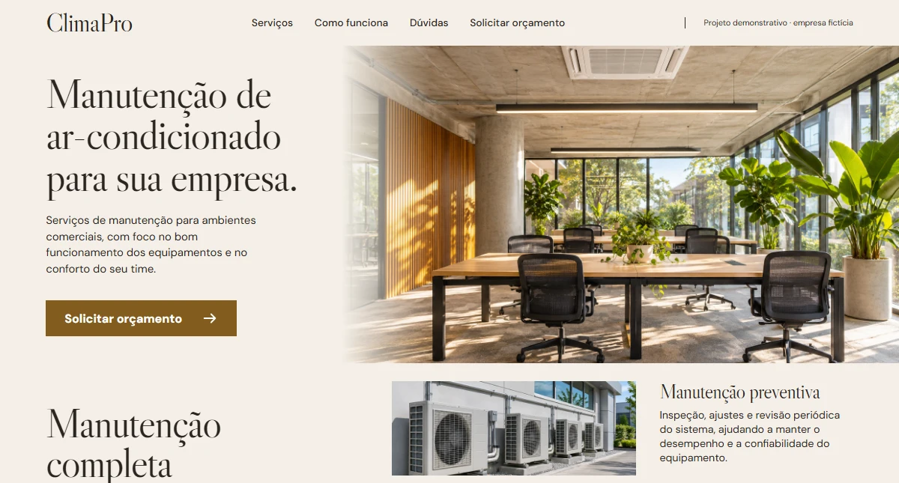

Sites e landing pages
Páginas comerciais, campanhas e sites institucionais, do layout aprovado ao navegador.
Sou Pedro. Transformo layouts e briefings em sites, interfaces e integrações que suas equipes podem usar, testar e entregar.
Conversar sobre um projeto

Uma oferta comercial. Três jeitos de apresentá-la.
Uma empresa fictícia de climatização, com páginas de captação, catálogo de serviços e solicitação de orçamento. Compare como a mesma estrutura ganha três identidades.
Para agências que precisam de execução técnica e empresas que querem colocar um projeto no ar.
Páginas comerciais, campanhas e sites institucionais, do layout aprovado ao navegador.
Fluxos, formulários e telas responsivas que já nascem pensando no uso real.
Captação de leads com validação, encaminhamento ao destino combinado e teste de ponta a ponta.
Alinhamos objetivo, escopo, materiais e o que precisa funcionar na entrega.
Você avalia uma versão navegável. Ajustamos o que ficou fora do combinado.
Conferimos desktop, celular e fluxos críticos e combinamos o repasse.
Conte o contexto. A conversa começa com o que precisa ser entregue.
Prefiro escrever por e-mail